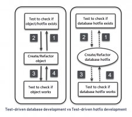
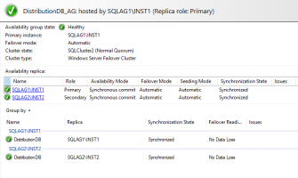
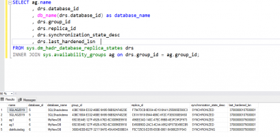
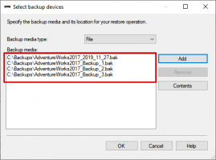
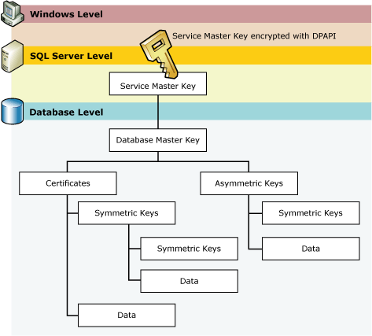
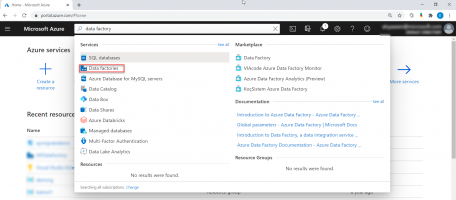
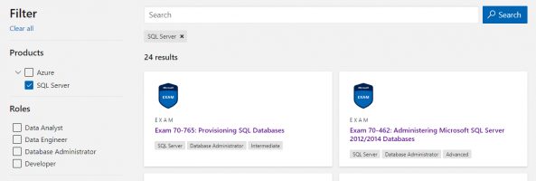

I know this is a tutorial, but would you actually put the product description in a separate table as you did in this example?
Can you explain why?
Thanks
Also on SQL Shack

Test-driven database hotfix development …
This article is about using tSQLt for test-driven database hotfix …

Configuring SQL Server replication …
This article shows how to configure SQL Server replication for the …

Monitor and failover a Distributed SQL …
In this article, we'll show how to monitor and failover a distributed SQL Server …

Split SQL database backups into …
In this article, we learned how we can split the large backup file into multiple …

Configure a SQL Server Always On …
This article configures SQL Server Always On Availability Groups on the …

Starting your journey with Microsoft Azure …
In this article, we will go through the Microsoft Azure Data Factory service, that …
How to prepare for the Exam DP-201: …
In this article, we will discuss how to prepare yourself for an important …

SQL Certifications
In this article, we will learn some tips to study for the MS SQL Certification …